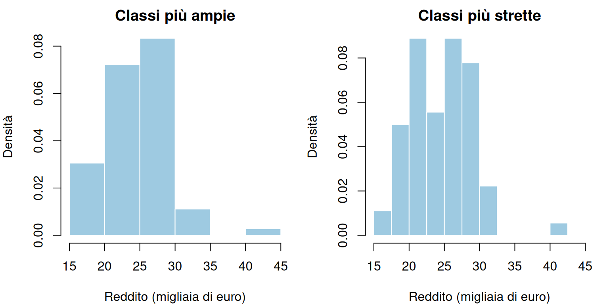
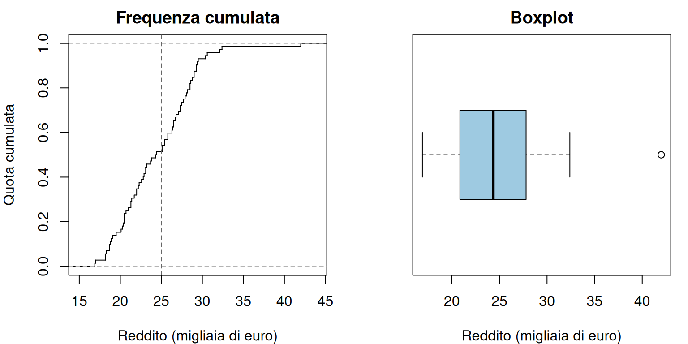
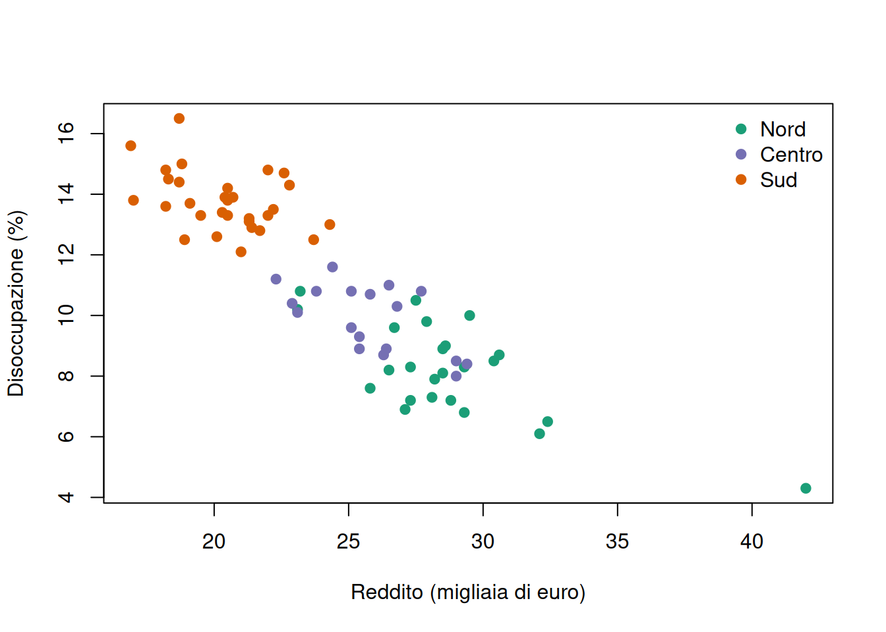

Un grafico ben costruito rende visibili regolarità che una tabella può nascondere. Può mostrare, per esempio, che la disoccupazione è più elevata in alcuni gruppi di comuni, che una distribuzione presenta una lunga coda verso destra o che una serie economica cambia bruscamente dopo uno shock. Un grafico, tuttavia, non è una decorazione e non è una fotografia neutrale dei dati: la scelta delle variabili, della scala, dei colori e del periodo determina ciò che il lettore riesce a vedere.
Nell’analisi dei dati economici le rappresentazioni grafiche hanno almeno tre funzioni. Aiutano a esplorare i dati prima di applicare un modello, a controllare errori e osservazioni insolite e a comunicare un risultato. Lo stesso grafico può svolgere più funzioni, ma deve sempre essere collegato a una domanda precisa.
3.1 Dal quesito al grafico
Prima di scegliere un tipo di grafico conviene completare una frase: “Voglio mostrare…”. Se la frase è “come si distribuisce il reddito tra i comuni”, la variabile principale è quantitativa e un istogramma può essere adatto. Se è “come cambia la disoccupazione nel tempo”, l’ordine temporale è essenziale e sarà preferibile un grafico a linee. Se è “come reddito e disoccupazione variano insieme”, occorre rappresentare entrambe le variabili con uno scatterplot.
La scelta può essere riassunta così:
Domanda
Variabili o struttura
Grafico utile
Quali categorie sono più frequenti?
Una qualitativa
Barre
Come si distribuiscono i valori?
Una quantitativa
Istogramma, funzione cumulata o boxplot
Due gruppi hanno distribuzioni diverse?
Una quantitativa e una qualitativa
Boxplot paralleli
Due misure variano insieme?
Due quantitative
Scatterplot
La composizione cambia tra gruppi?
Due qualitative
Barre raggruppate o al 100%
Come evolve un indicatore?
Serie temporale
Linee
Dove si concentra un fenomeno?
Dati territoriali
Carta tematica
Queste associazioni non sono regole meccaniche. La numerosità dei dati, il pubblico e il messaggio sostantivo possono suggerire soluzioni diverse. Una tabella resta spesso preferibile quando servono pochi valori esatti; un grafico è più efficace quando interessano forma, confronto e andamento.
3.1.1 Gli elementi minimi
Un grafico interpretabile dovrebbe indicare:
che cosa rappresentano gli assi e in quale unità di misura;
la popolazione, il territorio e il periodo di riferimento;
se i valori sono conteggi, percentuali, tassi o indici;
la fonte dei dati e le eventuali trasformazioni;
il significato di colori, simboli e linee;
quando rilevante, il numero di osservazioni e l’incertezza delle stime.
Il titolo dovrebbe esprimere il contenuto del grafico, non limitarsi a “Grafico 1”. Anche il denominatore deve essere evidente: “disoccupati” e “tasso di disoccupazione” non descrivono la stessa grandezza.
3.2 Un insieme di dati per gli esempi
Useremo un campione simulato di 72 comuni, suddivisi in tre aree. Ogni riga rappresenta un comune. Il reddito è espresso in migliaia di euro per residente, disoccupazione e partecipazione elettorale in percentuale. La valutazione dei servizi è una variabile qualitativa ordinale. I dati sono costruiti esclusivamente a scopo didattico e non descrivono territori reali.
set.seed(2026)numero_comuni <-c(Nord =24, Centro =18, Sud =30)area <-factor(rep(names(numero_comuni), times = numero_comuni),levels =c("Nord", "Centro", "Sud"))reddito <-round(rnorm(n =length(area),mean =c(Nord =29, Centro =25, Sud =21)[as.character(area)],sd =2.3 ),1)reddito[1] <-42effetto_area <-c(Nord =-1, Centro =0, Sud =1.2)[as.character(area)]disoccupazione <-round(20-0.38* reddito + effetto_area +rnorm(length(area), mean =0, sd =0.9),1)partecipazione <-round(pmin(85,pmax(35,75-0.9* disoccupazione +rnorm(length(area), mean =0, sd =3) ) ),1)probabilita_servizi <-list(Nord =c(0.15, 0.45, 0.40),Centro =c(0.25, 0.50, 0.25),Sud =c(0.50, 0.40, 0.10))servizi <-unlist(lapply(names(numero_comuni), function(zona) {sample(c("Insufficiente", "Adeguata", "Buona"),size = numero_comuni[zona],replace =TRUE,prob = probabilita_servizi[[zona]] ) }),use.names =FALSE)dati_comuni <-data.frame(area = area,reddito = reddito,disoccupazione = disoccupazione,partecipazione = partecipazione,servizi =factor( servizi,levels =c("Insufficiente", "Adeguata", "Buona"),ordered =TRUE ))dati_comuni |>head() |> knitr::kable(caption ="Campione simulato di comuni con reddito, disoccupazione, partecipazione e valutazione dei servizi.",digits =c(0, 1, 1, 1, NA))
Campione simulato di comuni con reddito, disoccupazione, partecipazione e valutazione dei servizi.
area
reddito
disoccupazione
partecipazione
servizi
Nord
42.0
4.3
74.6
Buona
Nord
26.5
8.2
64.9
Adeguata
Nord
29.3
8.3
68.5
Insufficiente
Nord
28.8
7.2
70.8
Buona
Nord
27.5
10.5
66.3
Insufficiente
Nord
23.2
10.8
60.6
Adeguata
La simulazione incorpora differenze territoriali e associazioni tra variabili per rendere leggibili i grafici. Tali relazioni fanno parte del meccanismo con cui abbiamo costruito l’esempio: non costituiscono risultati empirici.
3.3 Grafici univariati
Un grafico univariato descrive una sola variabile. La forma appropriata dipende soprattutto dal fatto che la variabile sia qualitativa o quantitativa.
3.3.1 Diagramma a barre
Il diagramma a barre rappresenta le modalità di una variabile qualitativa, oppure i pochi valori distinti di una variabile quantitativa discreta. Ogni modalità occupa una posizione sull’asse orizzontale; l’altezza della barra rappresenta la frequenza assoluta o relativa. Le barre sono separate perché le categorie sono distinte. La loro larghezza non contiene informazione e dovrebbe rimanere uguale.
Distribuzione percentuale della valutazione dei servizi nei comuni simulati.
Nel campione simulato la modalità “Adeguata” è la più frequente. L’asse verticale riporta percentuali di comuni, non percentuali di residenti: ogni comune pesa allo stesso modo, indipendentemente dalla popolazione.
Le barre possono essere ordinate secondo la sequenza naturale di una variabile ordinale oppure, per una variabile nominale, per frequenza decrescente. Il secondo ordinamento facilita l’individuazione delle categorie più comuni ed è alla base del diagramma di Pareto. Un grafico a torta comunica anch’esso una composizione, ma rende difficile confrontare spicchi simili e diventa rapidamente illeggibile con molte categorie; in genere le barre consentono confronti più precisi.
AvvisoConteggi o percentuali?
I conteggi rispondono alla domanda “quante unità?”. Le percentuali rispondono alla domanda “quale quota del gruppo?”. Per confrontare campioni di diversa numerosità, i conteggi possono essere fuorvianti e sono spesso preferibili frequenze relative o percentuali.
3.3.2 Istogramma
L’istogramma descrive la distribuzione di una variabile quantitativa suddividendone i valori in classi adiacenti. Come visto nel capitolo precedente, l’area di ogni rettangolo deve essere proporzionale alla frequenza della classe. Quando le classi hanno ampiezza diversa, l’altezza corretta è quindi una densità, non il semplice conteggio.
La scelta delle classi modifica il livello di dettaglio. Classi molto ampie possono nascondere code o più addensamenti; classi troppo strette possono far apparire come struttura ciò che è soltanto irregolarità campionaria. È utile provare più suddivisioni e verificare che la conclusione principale non dipenda da una sola scelta.
par(mfrow =c(1, 2), mar =c(4, 4, 2, 1))hist( dati_comuni$reddito,breaks =seq(15, 45, by =5),freq =FALSE,col ="#9ECAE1",border ="white",main ="Classi più ampie",xlab ="Reddito (migliaia di euro)",ylab ="Densità")hist( dati_comuni$reddito,breaks =seq(15, 45, by =2.5),freq =FALSE,col ="#9ECAE1",border ="white",main ="Classi più strette",xlab ="Reddito (migliaia di euro)",ylab ="Densità")

La distribuzione simulata del reddito con due diverse suddivisioni in classi.
par(mfrow =c(1, 1))
Entrambe le versioni mostrano che la maggior parte dei comuni ha un reddito compreso approssimativamente tra 19 e 31 mila euro. Il valore di 42 mila euro produce una coda verso destra. La posizione precisa delle barre cambia, ma questa conclusione rimane visibile in entrambe le suddivisioni.
3.3.3 Funzione di ripartizione empirica e boxplot
La funzione di ripartizione empirica mostra, per ogni valore \(x\), la quota di osservazioni non superiore a \(x\). Indicandola con \(F_n(x)\),
\[
F_n(x)=\frac{\text{numero di osservazioni con valore non superiore a }x}{n},
\]
dove \(n\) è il numero totale di osservazioni. La funzione cresce a gradini da 0 a 1 ed è utile per leggere percentili o confrontare soglie rilevanti. Non richiede la scelta delle classi dell’istogramma.
Il boxplot sintetizza invece mediana, primo e terzo quartile, intervallo interquartile e valori segnalati come anomali. È molto compatto, ma nasconde dettagli come addensamenti multipli e dimensione dei gruppi.
par(mfrow =c(1, 2), mar =c(4, 4, 2, 1))plot(ecdf(dati_comuni$reddito),verticals =TRUE,do.points =FALSE,main ="Frequenza cumulata",xlab ="Reddito (migliaia di euro)",ylab ="Quota cumulata")abline(v =25, lty =2, col ="grey40")boxplot( dati_comuni$reddito,horizontal =TRUE,col ="#9ECAE1",main ="Boxplot",xlab ="Reddito (migliaia di euro)")

Funzione di ripartizione empirica e boxplot del reddito simulato.
par(mfrow =c(1, 1))
Il 51,4% dei comuni ha un reddito non superiore a 25 mila euro. Il boxplot individua 42 mila euro come valore anomalo secondo la regola di 1,5 intervalli interquartili. Il punto non deve essere cancellato automaticamente: il grafico segnala un caso da verificare, non stabilisce che si tratti di un errore.
3.4 Grafici bivariati
Un grafico bivariato studia due variabili congiuntamente. La domanda può riguardare un’associazione tra misure quantitative, un confronto tra gruppi o la composizione di categorie diverse.
3.4.1 Due variabili quantitative: lo scatterplot
In uno scatterplot ogni unità \(i\) è rappresentata dal punto di coordinate \((x_i,y_i)\). Il valore \(x_i\) si legge sull’asse orizzontale e \(y_i\) su quello verticale. Il grafico permette di osservare direzione, forma e intensità dell’associazione, oltre a gruppi e osservazioni insolite.
colori_area <-c(Nord ="#1B9E77", Centro ="#7570B3", Sud ="#D95F02")plot( dati_comuni$reddito, dati_comuni$disoccupazione,pch =19,col = colori_area[dati_comuni$area],xlab ="Reddito (migliaia di euro)",ylab ="Disoccupazione (%)")legend("topright",legend =names(colori_area),col = colori_area,pch =19,bty ="n")

Reddito e disoccupazione nei comuni simulati, distinti per area.
La correlazione lineare nei dati simulati è -0,89. I punti indicano che i comuni con reddito più elevato tendono ad avere una disoccupazione più bassa. I colori mostrano anche una separazione parziale tra aree: ignorare questa struttura nasconderebbe informazioni rilevanti. Il grafico descrive un’associazione costruita nella simulazione e non dimostra che il reddito causi la riduzione della disoccupazione.
Prima di riassumere uno scatterplot con una correlazione occorre controllare se la relazione è approssimativamente lineare, se sono presenti gruppi e se pochi punti dominano il risultato. Una correlazione vicina a zero non esclude una relazione curva.
3.4.2 Una variabile quantitativa e una qualitativa
I boxplot paralleli confrontano la distribuzione di una variabile quantitativa tra le modalità di una variabile qualitativa. Per un confronto corretto gli assi devono essere gli stessi. È utile indicare anche la numerosità dei gruppi, perché il boxplot non la rende immediatamente visibile.
Distribuzione del reddito simulato per area; tra parentesi è riportato il numero di comuni.
Le mediane sono 28,35 mila euro al Nord, 25,60 al Centro e 20,50 al Sud. Queste differenze descrivono il campione simulato. Il grafico non separa l’effetto dell’area da composizione demografica, struttura produttiva o altre caratteristiche dei comuni e non autorizza quindi un’interpretazione causale.
3.4.3 Due variabili qualitative
Per confrontare una variabile qualitativa tra gruppi si possono usare barre affiancate o barre impilate al 100%. Le prime facilitano il confronto di una singola categoria; le seconde mostrano la composizione interna di ciascun gruppo. Le barre al 100% devono essere costruite con percentuali condizionate allo stesso denominatore di gruppo.
Composizione percentuale della valutazione dei servizi all’interno di ciascuna area simulata.
La valutazione “Buona” riguarda il 33,3% dei comuni del Nord e del Centro, ma soltanto il 6,7% di quelli del Sud. Le percentuali sono calcolate separatamente entro ciascuna area e sommano a 100 per ogni barra. Poiché i dati sono simulati e i gruppi hanno numerosità diversa, il grafico non rappresenta quote di popolazione residente e non misura la qualità effettiva dei servizi.
3.5 Serie temporali
In un grafico temporale l’asse orizzontale deve rispettare l’ordine e la distanza tra i periodi. Collegare i punti con una linea è sensato perché un’osservazione segue la precedente nel tempo. La stessa linea sarebbe ingannevole tra comuni ordinati alfabeticamente, dove non esiste continuità.
Il seguente indice simulato della spesa sociale pone il 2016 uguale a 100. Un valore di 112,5 significa che la spesa è del 12,5% superiore al livello dell’anno base, non che ammonta a 112,5 euro.
Tra il 2016 e il 2025 l’indice cresce da 100 a 118,3, cioè del 18,3% rispetto all’anno base. Nel 2020 si osserva una lieve diminuzione e nel 2021 un incremento più marcato. Il grafico non identifica le cause di questi cambiamenti: per attribuirli a una politica o a uno shock servirebbero informazioni e un disegno di analisi ulteriori.
L’intervallo temporale scelto deve essere dichiarato. Selezionare soltanto gli anni favorevoli a una tesi può cambiare il messaggio. Anche la frequenza è importante: valori annuali possono nascondere stagionalità mensile o trimestrale, mentre dati ad alta frequenza possono enfatizzare oscillazioni di breve periodo.
3.6 Rappresentazioni territoriali
Una carta tematica associa valori o categorie ad aree geografiche. Nelle carte coropletiche ogni territorio è colorato in base a una variabile, per esempio il tasso di disoccupazione provinciale. Queste carte sono efficaci per individuare continuità, divari e raggruppamenti spaziali, ma richiedono alcune precauzioni:
per confrontare territori di popolazione diversa sono normalmente preferibili tassi, quote o valori pro capite ai conteggi assoluti;
territori più estesi occupano più spazio visivo, anche se contengono poche persone;
numero e soglie delle classi cromatiche possono modificare la percezione dei divari;
una categoria specifica deve distinguere i dati mancanti dai valori pari a zero;
confini e unità territoriali devono essere coerenti con periodo e domanda di ricerca.
Una mappa mostra dove si osserva un fenomeno, non perché si verifichi. Territori vicini possono avere valori simili perché condividono istituzioni, infrastrutture o mercati del lavoro, ma la sola prossimità visiva non prova alcun meccanismo. I capitoli sui dati spaziali introdurranno strumenti specifici per studiare queste dipendenze.
3.7 Grafici corretti e grafici fuorvianti
Un grafico può contenere valori esatti e trasmettere comunque un’impressione distorta. Prima di interpretarlo conviene controllare i seguenti aspetti.
3.7.1 Scale e assi
Nei diagrammi a barre, troncare l’asse verticale può far apparire enorme una differenza modesta perché la lunghezza della barra viene letta rispetto allo zero. Per linee e scatterplot un asse ristretto può invece essere utile a mostrare variazioni piccole, purché i limiti siano visibili e non si esageri il messaggio. Scale logaritmiche possono rendere confrontabili crescite proporzionali, ma devono essere dichiarate e spiegate.
3.7.2 Dimensioni e decorazioni
Se un valore doppio viene rappresentato da un cerchio, deve raddoppiare l’area del simbolo, non il raggio. Grafici tridimensionali, prospettive e decorazioni possono alterare il confronto senza aggiungere informazione. La soluzione più semplice è spesso la più leggibile.
3.7.3 Doppi assi
Due scale verticali diverse permettono di far apparire quasi parallele o divergenti due serie modificando soltanto i limiti degli assi. Quando possibile è preferibile usare pannelli separati, indici con la stessa base o variazioni percentuali confrontabili. Un andamento comune non dimostra comunque che una serie determini l’altra.
3.7.4 Colori e accessibilità
Il colore dovrebbe codificare informazione. Per valori ordinati è adatta una scala progressiva dal chiaro allo scuro; per scostamenti positivi e negativi può essere utile una scala divergente con un punto centrale esplicito. Troppe tonalità, combinazioni rosso–verde o colori privi di legenda rendono il grafico meno accessibile. Il significato non dovrebbe dipendere soltanto dal colore quando simboli, etichette o tipi di linea possono aiutare.
3.7.5 Dati mancanti e incertezza
Una linea interrotta può segnalare un dato mancante; collegare automaticamente i punti suggerisce invece un andamento mai osservato. Quando i valori sono stime campionarie, intervalli di confidenza o bande d’incertezza aiutano a non trattare piccole differenze come certe. L’assenza di una barra o di un territorio colorato non deve essere interpretata come valore zero.
AvvisoUna sequenza per la lettura critica
Leggere titolo, fonte, popolazione e periodo.
Identificare unità di analisi, variabili e unità di misura.
Controllare denominatori, assi, scale, classi e valori mancanti.
Descrivere ciò che il grafico mostra senza attribuire subito una causa.
Chiedersi quali scelte grafiche alternative potrebbero cambiare l’impressione.
3.8 Costruire un grafico: una procedura essenziale
Una procedura utile per l’analisi economica è:
formulare la domanda e identificare il confronto rilevante;
verificare tipo delle variabili, unità di analisi, periodo e qualità dei dati;
scegliere il grafico coerente con la struttura delle osservazioni;
costruire una prima versione semplice e controllare valori anomali o mancanti;
aggiungere titolo, assi, unità, legenda, fonte e numerosità quando necessaria;
verificare che scale e denominatori non alterino il confronto;
accompagnare il grafico con una breve interpretazione e con i suoi limiti.
Un buon grafico riduce il lavoro del lettore senza ridurre la complessità sostantiva del fenomeno. Deve permettere di distinguere ciò che è osservato da ciò che è ipotizzato e rendere trasparenti le scelte necessarie per passare dai dati a un messaggio.